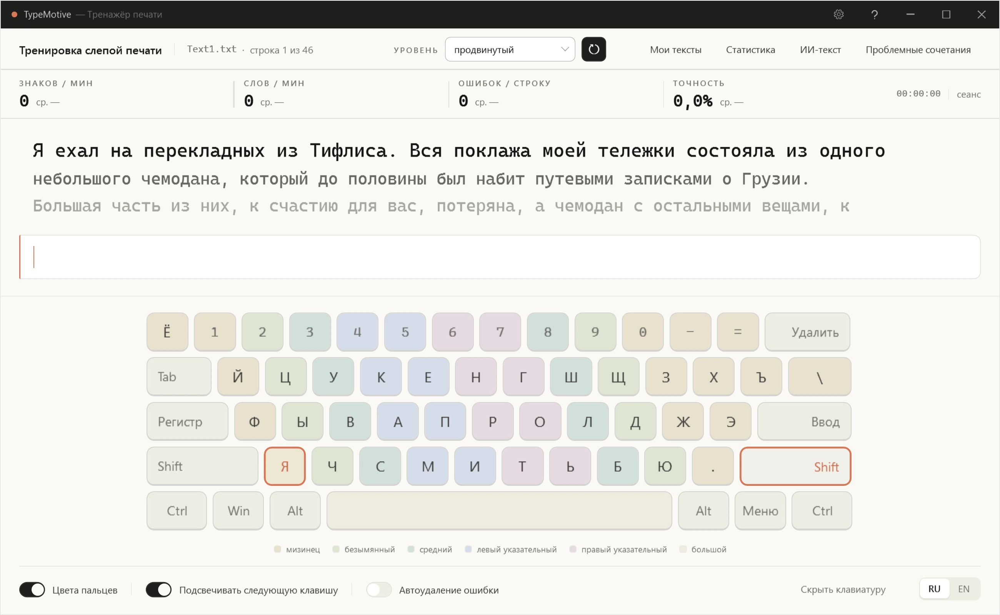
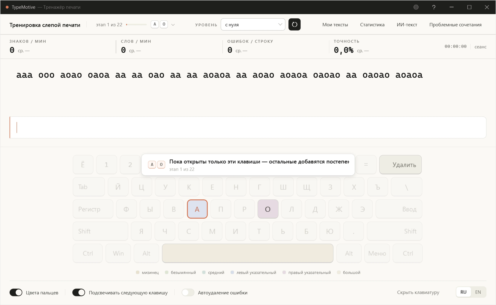
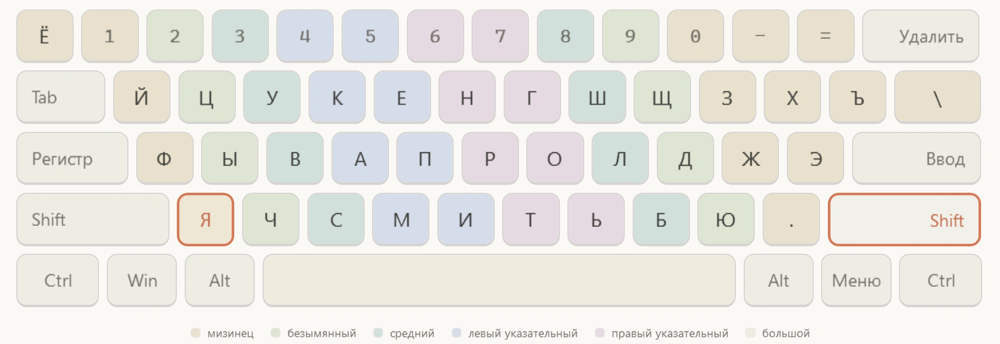
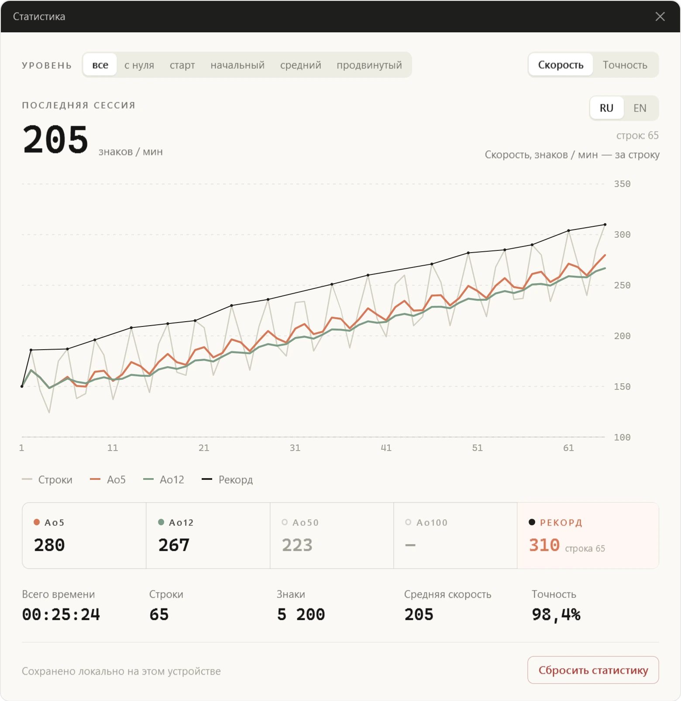
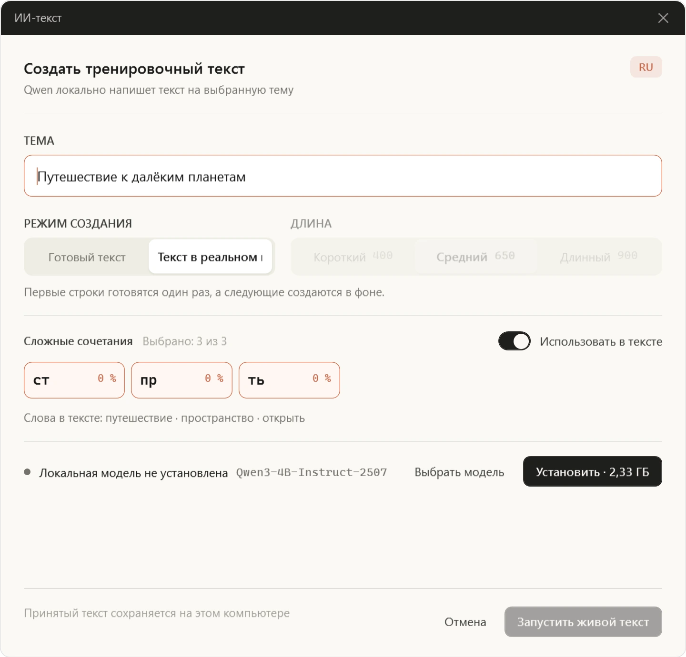
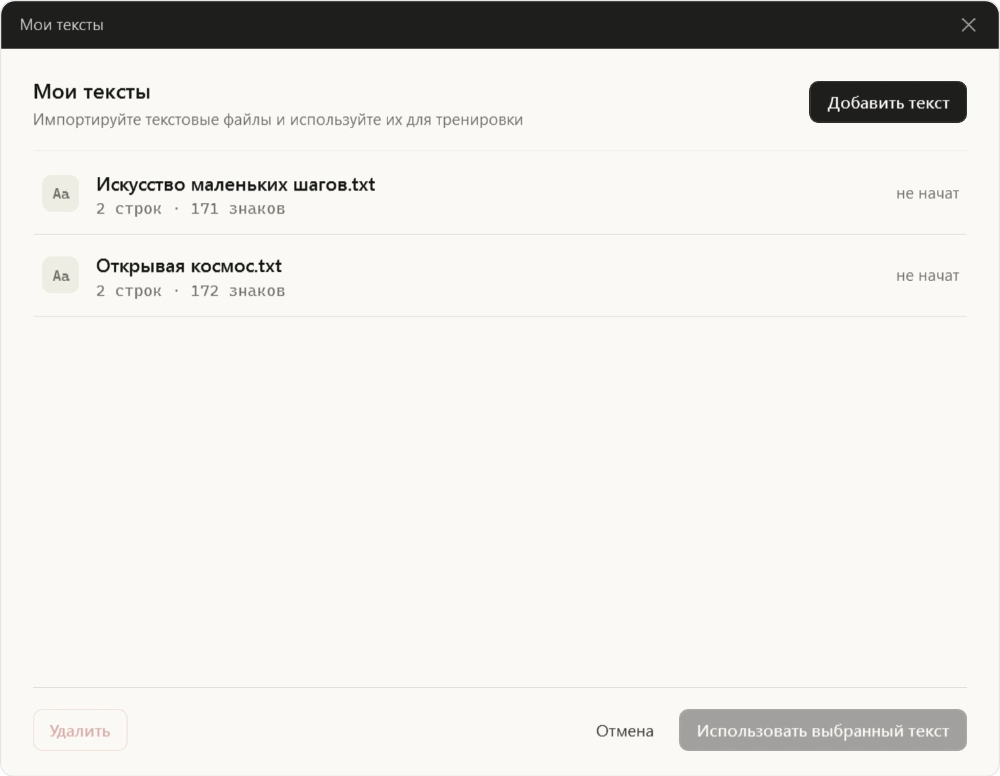

{kind=link}
Time spent typing
Pauses, dialogs, and time in other windows are excluded from active typing time.
Touch-typing trainer / Windows
Less looking at the keyboard. More room for your thoughts. TypeMotive helps you learn to touch-type, with practice shaped around your mistakes.
Version 1.0.3 · 62 MB · x64

01 / Practice
Start from scratch or choose your level. English and Russian layouts have their own learning progress.
New keys, short exercises, and a little repetition. Mistakes guide what to practice next without holding you back.

The home row and short lines. Let your fingers learn where they belong.
Familiar words and simple sentences to build confidence.
Capital letters and punctuation. Find your rhythm in the tricky parts.
Literary excerpts and longer texts for fluent practice.
02 / Guidance
Each finger has its own color. The next key is highlighted, with your chosen layout right in front of you.
As you get comfortable, turn off the hints or hide the keyboard. A line-by-line speed chart takes its place.
Start with your first line ↗
03 / Progress
Speed is only part of the picture. Track accuracy, spot difficult letter pairs, and compare your results line by line.

Pauses, dialogs, and time in other windows are excluded from active typing time.
Speed and accuracy charts, rolling averages, and personal records.
Personalized drills for the letter pairs where you tend to mistype or slow down.
04 / Local AI
Space, travel, or your favorite hobby — pick a topic. A local Qwen model writes the text and adds words to practice your difficult letter pairs.
Generation runs on your computer. Your texts and prompts are not sent to a cloud AI service.
AI is optional. The model is downloaded separately; generation speed depends on your computer.


05 / Your texts
Add a story, a note, or study material. Drag one or more .txt files into the app.
TypeMotive remembers your place in each text. Come back whenever you like.
.txt files up to 5 MBYour next line
Install TypeMotive, choose your layout,
and let your fingers find their rhythm.
Version 1.0.3 · 62 MB
The installer is not yet digitally signed, so Windows SmartScreen may display a warning. You can verify the downloaded file with this SHA-256 checksum:
FC4A7CCAAE061BD794F0BB0A7C59C6197014DE6ADABE13E5D8FD0C8BCD093E9F